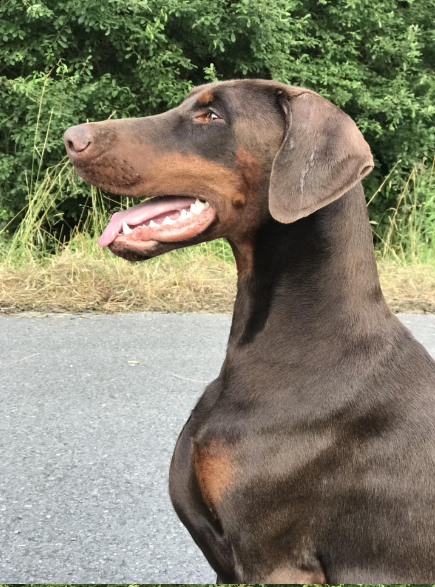

Casa Di Fera Gorrissen's Girl "Khara"
Mére : Ch.Elegant Line Samba: http://www.dobermann-review.com/females/Elegant_Line_Samba/index.php
Père : Ch. Valdo from Lipar Land : http://www.the-dobermann.com/males/40-a30/5184-valdo-from-lipar-land
Santé
- HDA exempt dysplasie
- EYES FREE Tares oculaires exempt : PHPV/PHTVL FREE
- CARDIO FREE
- DILUTE FREE
Casa Di Fera Gorrissen's Girl "Hera"

Elxis by the Sea